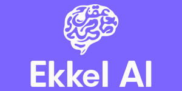
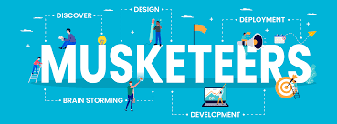
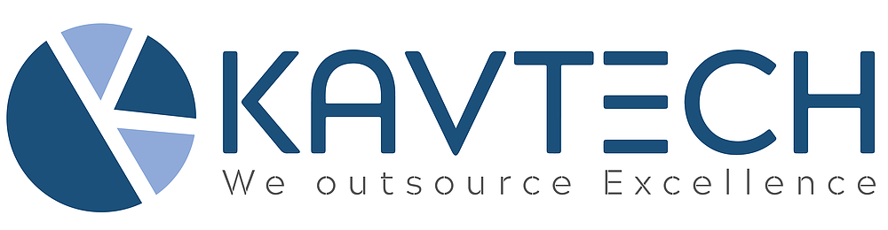

Data Scientist & AI Engineer in Pakistan who creates cutting edge Products with AI powered and make it functional with full process of training the AI models & add magic in Data.
i'm aviation & space science enthusiast and working in Brain computer interface as long skilled in Quantum Computers framework on Qiskit
Experienced data scientist specializing in AI, possesses a strong passion for leveraging data-driven insights to address complex challenges. With a deep understanding of machine learning algorithms, natural language processing, and deep learning techniques, I have successfully deployed AI models to drive impactful outcomes. I am adept at utilizing cloud platforms and tools such as TensorFlow, PyTorch, and Scikit-learn to develop scalable and efficient AI solutions. Passionate about staying at the forefront of emerging technologies, I am dedicated to continuously expanding my knowledge and skill set to drive AI-driven innovation.
Expert in Python, R & Multiple Data Science & Statistics Tools
Portfolio in Quantum Computing and Machine Learning
AI Engineer by Profession.
Expert in Deep Learning Techniques : PyTorch , TensorFlow , Keras, Fastai, & Computer Vision Techniques
Expert in Machine Learning Techniques : Linear Regression, Logistic Regression, Binary, Classifier, Decision Trees & PCA , SVD , SVM , K-Means , KNN ,
MIT Micro-Master Credentials:
Micro-Master Credentials in Data Science & Statistics
Micro-Master Credentials in Supply Chain
CS50 Professional Certification in Artificial Intelligence
Fellowship.AI Alumnus
With a strong foundation in web development and an eagerness to delve into the exciting world of AI, I am a candidate ready to bridge the gap between these two domains. As a web developer, I have honed my skills in HTML, CSS, JavaScript, and various web frameworks, creating intuitive and responsive web applications. Recognizing the growing importance of AI in shaping the future, I have recently embarked on a journey to expand my expertise in this field. I have completed specialized courses and gained hands-on experience in machine learning algorithms, deep learning frameworks, and data analysis techniques. This has enabled me to develop a solid understanding of AI concepts and their practical implementation. Eager to contribute my diverse skill set and passion for AI, I seek opportunities to collaborate with forward-thinking teams. Let’s connect and explore how we can harness the power of AI and web development to create transformative solutions that make a lasting impact.
Data Science (Professional Certified) IBM professional Data Science Certification
GANs, Deep & Machine Learning Specialization Stanford University, Online
Introduction to Data Analytics for Business University of Colorado Boulder
Crash course on Python Google
IBM AI Engineering Professional (Deep Learning with TensorFlow & Keras) IBM AI Engineering
Recent
Work Experience

Ekkel.AI
AI Engineer
April 2024 - Current
I lead AI Department with direct report to CEO for production & Lead Projects on LLMs, Huggingface models, mistral llama &
using langchain, llama index and multiple embedding models, has been a key member in R&D spot for Computer Vision, Data
Science, Numpy, Pandas, Pytorch, TensorFlow & DevOps on AWS, Runpod, Local server, Lambda, ECR, CI/CD, Code-Commit,
Github, Google-Colab & Fastapi, Ubuntu OSX, command shell.
Highbit Games
AI Engineer
Aug 2023 - Feb 2024
I lead AI Department. Lead Projects on GANs, Computer Vision, Data Science, Numpy, Pandas, Pytorch, TensorFlow & DevOps on AWS, EC2, Lambda, ECR, CI/CD, Code-Commit, Github, Google-Colab & FastAPI. I’m consistent towards Quantum Computing EraI lead AI Department. Lead Projects on GANs, Computer Vision, Data Science, Numpy, Pandas, Pytorch, TensorFlow & DevOps on AWS, EC2, Lambda, ECR, CI/CD, Code-Commit, Github, Google-Colab & FastAPI. I’m consistent towards Quantum Computing Era
Skills: Quantum Computing · Deep Learning · Amazon Web Services (AWS) · Computer Vision · Swift (Programming Language) · Python (Programming Language)

Musketeers Tech
Lead AI Engineer
April 2023 - Aug 2023
• Lead a team of AI developers, ML Engineers and researchers, setting goals and providing direction and guidance as needed.
construction and building Talking head metaverse domain object
Using LLM and building Chatbot to produce the AI the process of SQL and Data Engineering
Process AI configuration and building blocks to enhance productivity of Data-driven Tasks.
Develop the Core NLP base Apps
GeneFace and DeepLearning for model training and Configuration.
• Develop and implement AI solutions across organization, including natural language processing, computer vision, and machine learning.
• Stay up-to-date with the latest advancements in AI and machine learning, and make recommendations for new technologies and approaches.
• Collaborate with other departments and stakeholders to identify opportunities for AI solutions that can improve business processes and customer experiences.
• Manage the AI development process, ensuring that projects are completed on time and within budget.
• Communicate progress and results to senior management and other stakeholders.• Lead a team of AI developers, ML Engineers and researchers, setting goals and providing direction and guidance as needed. construction and building Talking head metaverse domain object Using LLM and building Chatbot to produce the AI the process of SQL and Data Engineering Process AI configuration and building blocks to enhance productivity of Data-driven Tasks. Develop the Core NLP base Apps GeneFace and DeepLearning for model training and Configuration. • Develop and implement AI solutions across organization, including natural language processing, computer vision, and machine learning. • Stay up-to-date with the latest advancements in AI and machine learning, and make recommendations for new technologies and approaches. • Collaborate with other departments and stakeholders to identify opportunities for AI solutions that can improve business processes and customer experiences. • Manage the AI development process, ensuring that projects are completed on time and within budget. • Communicate progress and results to senior management and other stakeholders.
Skills: TensorFlow · Deep Learning · Amazon Web Services (AWS) · Machine Learning · Computer Vision · Python (Programming Language)
VOLV
AI Engineer
Jan 2023 - Aug 2023
My major Role in this company to work on product of Augmented Reality and make shopping Easy for all Users on virtual Try-on. i've been Leading computer vision and Augmented reality in Product. As a Team Leader, I've been responsible to implement the idea with coding and Training on Python as a computer Vision problem. With my friends, this our Startup has an amazing journey and cutting the edge of Future Market Need
Try this our latest framework of AR
https://go.thepersona.app/
Skills: Computer Vision

Kavtech Solutions
Associate Software Engineer
Jun 2022-Dec 2022
Leading AI & Data Science company initiated a project development of Unmanned Aircraft systems for surveillance. I’ve successfully delivered and designed a desired and optimum design of UAV drones and led object detection and product development project. Delivered design expertise with UAVs and embedded system skills. Successfully implemented AI challenge
in object detection using Yolo by open CV and different ML algorithms to make products more efficient.
As a Drone Engineer, my primary role is to design, develop, and maintain unmanned aerial vehicles (UAVs) or drones. Some of the specific responsibilities and duties of a Drone Engineer may include:
Designing and developing drone systems: This involves creating drone designs that meet specific requirements and developing drone systems that incorporate the latest technology.
Conducting research and development
involved in researching new materials and technologies that can be used in drone development, as well as developing new drone applications and use cases.
Testing and validating drone systems:
ensure that their designs and systems meet safety, reliability, and performance standards. This involves testing and validating drone systems under various conditions and environments.
Collaborating with cross-functional teams: Drone Engineers may work with other teams such as software engineers, data scientists, and product managers to integrate drone systems into larger projects or applications.
Staying up to date with industry trends: Drone technology is constantly evolving, so it's essential for Drone Engineers to stay up to date with the latest industry trends and advancements.Leading AI & Data Science company initiated a project development of Unmanned Aircraft systems for surveillance. I’ve successfully delivered and designed a desired and optimum design of UAV drones and led object detection and product development project. Delivered design expertise with UAVs and embedded system skills. Successfully implemented AI challenge in object detection using Yolo by open CV and different ML algorithms to make products more efficient. As a Drone Engineer, my primary role is to design, develop, and maintain unmanned aerial vehicles (UAVs) or drones. Some of the specific responsibilities and duties of a Drone Engineer may include: Designing and developing drone systems: This involves creating drone designs that meet specific requirements and developing drone systems that incorporate the latest technology. Conducting research and development involved in researching new materials and technologies that can be used in drone development, as well as developing new drone applications and use cases. Testing and validating drone systems: ensure that their designs and systems meet safety, reliability, and performance standards. This involves testing and validating drone systems under various conditions and environments. Collaborating with cross-functional teams: Drone Engineers may work with other teams such as software engineers, data scientists, and product managers to integrate drone systems into larger projects or applications. Staying up to date with industry trends: Drone technology is constantly evolving, so it's essential for Drone Engineers to stay up to date with the latest industry trends and advancements.
Skills: Leadership · MATLAB · Amazon Web Services (AWS) · Machine Learning · Team Management · SOLIDWORKS · Design and Fabrication of Modern RC Aircrafts · Python (Programming Language)
Previous
Completed Projects
Jan 2023 - Aug 2023
My major Role in this company to work on product of Augmented Reality and make shopping Easy for all Users on virtual Try-on. i've been Leading computer vision and Augmented reality in Product. As a Team Leader, I've been responsible to implement the idea with coding and Training on Python as a computer Vision problem. With my friends, this our Startup has an amazing journey and cutting the edge of Future Market Need
Skills: Computer Vision
I've put together a chatbot here which knows all my skills, work experience and has a copy of my CV/Resume. You can use it to ask questions about me to get a better idea of who I am and what I've done.
You can also download my resume here if you want to take a look at it. I'm currently looking for new opportunities so if you have a project you think I'd be a good fit for, please get in touch!